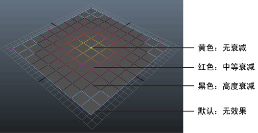

修改软选择衰减
衰减是软选择组件周围的区域，其中工具效果逐渐减弱。随着衰减的增加，变换效果将减小。衰减以颜色渐变表示。

注：
颜色渐变将显示在边上，不受当前组件选择模式的影响。
相关主题
软修改工具
本节内容
更改“软选择”(Soft Selection)衰减区域的大小
更改“软选择”(Soft Selection)衰减区域的形状
更改“软选择”(Soft Selection)衰减区域的颜色
父主题：
软选择组件